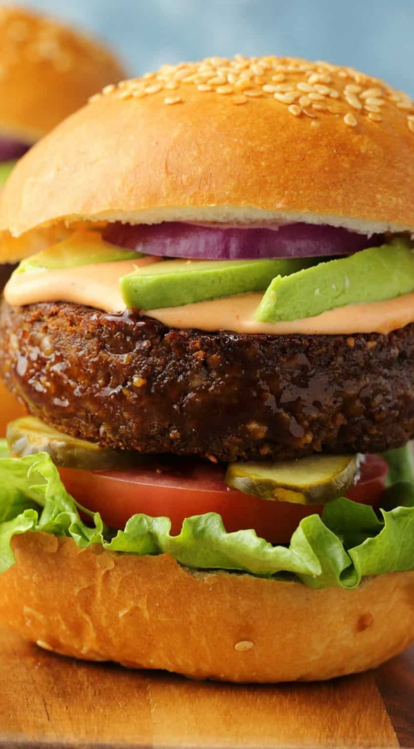
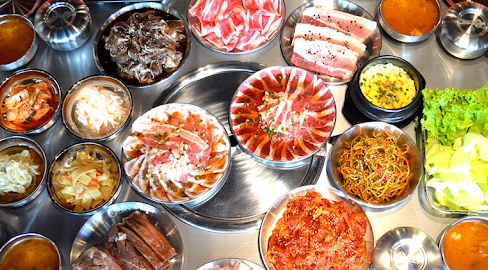
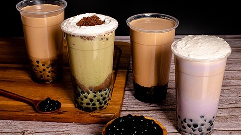

PLANT-BASED BURGER
Super hearty vegan burger! Grillable, flavorful and extremely satisfying, this is a burger that vegans and non-vegans alike will enjoy!

SAMGYUPSAL
Grilled pork belly (Samgyeopsal-gui) is an extremely popular Korean BBQ dish. Because the cooking and eating is done at the table, it’s really social and a great party food.
MILK TEA
Iced tea with tapioca pearls that are sucked from a large straw are perhaps Taiwan’s most famous culinary export. These bouncy, chewy balls are fun to munch on, much like chewing gum.